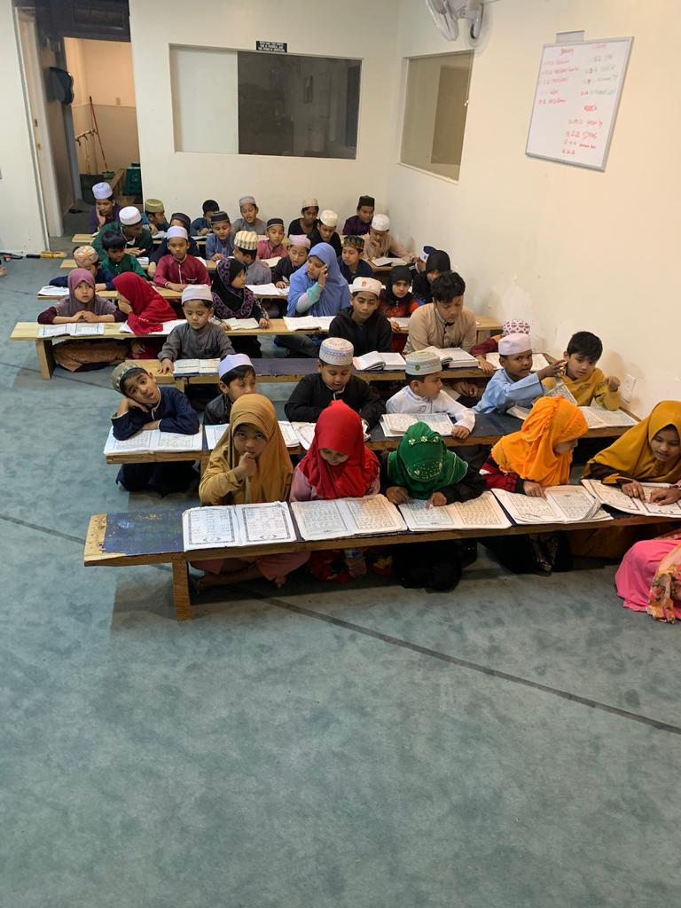

Daily prayers
A peaceful, accessible home for all five daily prayers.
بِسْمِ ٱللَّٰهِ ٱلرَّحْمَٰنِ ٱلرَّحِيمِ
Masjid Arkan welcomes the Phoenix community for daily prayers, Quran education, and meaningful connection.
Today at Masjid Arkan
Full daily scheduleSunday night halaqah every Sunday after Maghrib.
Adhan and Iqamah times follow Masjid Arkan's Phoenix prayer schedule and may change seasonally.

Grow with us
Our Quran and Islamic education programs help children, youth, and adults deepen their relationship with faith and community.
Explore educationOur community
We are a welcoming community, building faith, character, and service together.
A peaceful, accessible home for all five daily prayers.
Programs for children and adults seeking to learn and grow.
A place to connect, serve, and support one another.
Sadaqah jariyah
Your generosity supports our prayers, programs, and the families who call Masjid Arkan home.